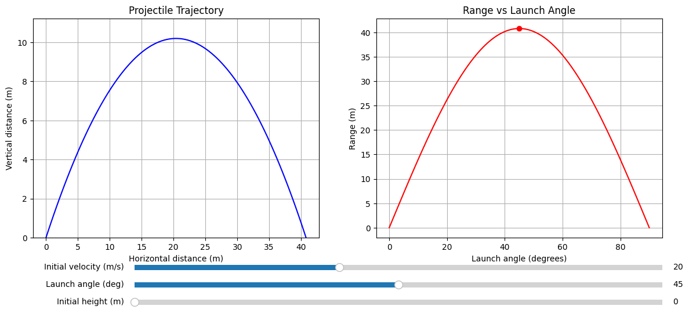

Problem 1
Investigating the Range as a Function of the Angle of Projection
1. Theoretical Foundation
Equations of Motion
For a projectile launched with: - Initial velocity v₀ (m/s) - Angle θ (degrees) - Initial height y₀ (m) - Gravitational acceleration g (m/s²)
Horizontal motion:
x(t) = v₀ cosθ · t
Vertical motion:
y(t) = y₀ + v₀ sinθ · t - ½gt²
Time of Flight
The total time in air is found when y(t) = 0:
t = [v₀ sinθ + √(v₀² sin²θ + 2gy₀)]/g
2. Range Analysis
Range Equation
R = v₀ cosθ · t = v₀ cosθ · [v₀ sinθ + √(v₀² sin²θ + 2gy₀)]/g
Special Case (y₀ = 0)
R = (v₀² sin2θ)/g
Key properties: - Maximum range at θ = 45° (when sin2θ = 1) - Symmetric range for complementary angles (θ and 90°-θ) - Quadratic dependence on v₀ - Inverse dependence on g
3. Parameter Effects
| Parameter | Effect on Range |
|---|---|
| v₀ ↑ | Range increases quadratically |
| θ change | Creates parabolic range curve peaking at 45° |
| y₀ ↑ | Increases range for all angles |
| g ↑ | Decreases range proportionally |
4. Practical Applications
Real-World Considerations:
- Air Resistance
- Creates asymmetric trajectory
- Reduces maximum range
-
Optimal angle becomes <45°
-
Elevated Launch/Terrain
- Different launch and landing heights
-
Requires solving y(t) = y_terrain
-
Wind Effects
- Headwind reduces range
- Tailwind increases range
-
Crosswind causes lateral drift
-
Projectile Characteristics
- Spin (Magnus effect)
- Shape affecting drag coefficient
- Surface texture
5. Model Limitations
Ideal Model Assumptions:
- Constant gravitational acceleration
- No air resistance
- Flat, uniform terrain
- No other forces (wind, spin, etc.)
- Point mass projectile
Where Model Fails:
- High-velocity projectiles (significant air resistance)
- Long-range artillery (Earth's curvature, rotation)
- Sports balls (spin effects)
- High-altitude launches (changing g and air density)
6. Visualization Concepts
Range vs Angle Curve:
R
↑
| /\
| / \
| / \
| / \
| / \
+-----------→ θ
0 45 90
Key Features to Visualize:
- Symmetric curve for y₀=0 case
- Peak at 45° for basic case
- How curve changes with:
- Different v₀ values
- Non-zero y₀
- Air resistance effects
- Comparison of ideal vs real trajectories
7. Extensions for Realistic Modeling
Improved Physical Models:
- Air Drag Models
- Linear drag: F_drag = -bv
-
Quadratic drag: F_drag = -cv|v|
-
Wind Models
- Constant wind velocity vector
-
Altitude-dependent wind profiles
-
Advanced Effects
- Magnus effect for spinning projectiles
- Variable atmospheric density
- Earth's rotation (Coriolis effect)

8. Conclusion
The projectile range-angle relationship demonstrates fundamental physics principles through an elegant mathematical framework. While the basic model provides crucial insights, real-world applications require considering additional physical factors. The symmetric range curve under ideal conditions serves as a foundation for understanding more complex scenarios encountered in engineering, ballistics, and sports science.